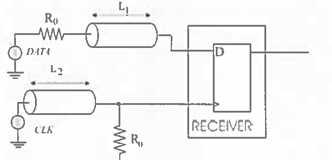
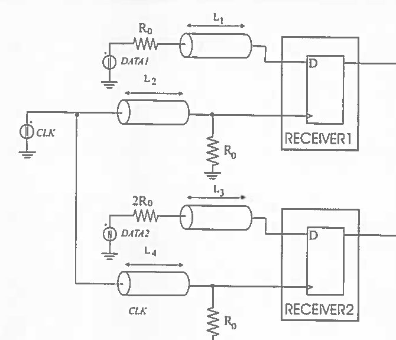

29. Mashq: uzatish liniyalari va bus (barcha imtihon savollari)
1. Imtihonda uchraydigan 5 xil masala turi
| Tur | Belgisi (shartda nima deyiladi) | Usul | Dars |
|---|---|---|---|
| A. Ekvipotensial (RC) | "equipotential", Ci, RO, TTX berilgan | τ = RO·Ci; VIH ≤ VDD(1 − e−T/τ), VIL ≥ VDD·e−T/τ | 24 |
| B. Lattice (kuchlanishlar) | Z∞, RO, RT, tP; "voltage at t = …" | v1, ΓT, ΓD; uzoq uchda (1+ΓT)U, (1+ΓT+ΓTΓD+ΓT²ΓD)U … | 25, 26 |
| C. tTX va skew joyga qarab | "receiver at the beginning / at the end" | VB(0), VC(tP), VB(2tP) ni VIL/VIH bilan solishtirish | 26 |
| D. RS tanlash (IWS) | "maximum Rs … Incident Wave Switching" | VOH·Z∞/(RS+Z∞) > VIH (+NM); tushishda VOH·RS/(RS+Z∞) < VIL | 26 |
| E. Bus sikli | "synchronous / asynchronous protocol", tSU, tH | sinxron tSU+tH+2tK; asinxron tK+tSU+tH+4tTXmax | 27 |
- Vaqtni hisoblashda vP ni sm/ns da oling: 0.7c = 21 sm/ns, 0.5c = 15 sm/ns.
- VOH (driver chiqishi) va Vcc (ta'minot) har xil bo'lsa, VOH ni ishlating.
- "Adapted termination" = RT = Z∞; "open" = RT = ∞ (Γ = +1); qabul qilgich "negligible input impedance and capacitance" deyilsa, rasmiy yechimlar uchni ochiq deb oladi.
- Uzoq uchdagi kuchlanish faqat tP, 3tP, 5tP da o'zgaradi: t = 2tP dagi qiymat = tP dagi qiymat.
- Barqaror kuchlanish Z∞ ga bog'liq emas.
2. O'zingiz yeching: imtihon uslubidagi 3 masala
Masala 1 (B turi, 2020-12 kabi). Z∞ = 60 Ω li liniya bir uchida chiqish qarshiligi 20 Ω li 0 → 3.3 V driverga, ikkinchi uchida 180 Ω kirish qarshilikli qabul qilgichga ulangan. tP = 4 ns. Toping: (1) qabul qilgichdagi kuchlanish t = 2tP da; (2) t = 4tP da; (3) barqaror kuchlanish; (4) qabul qilgich bir marta o'tishi uchun eng kichik shovqin zaxirasi (yuqori sath 3.3 V dan).
Yechim
ΓT = (180 − 60)/240 = +0.5. ΓD = (20 − 60)/80 = −0.5. U = 3.3 · 60/80 = 2.475 V.
(1) tP…3tP: (1 + 0.5)·2.475 = 3.71 V.
(2) 3tP…5tP: (1 + 0.5 − 0.25 − 0.125)·2.475 = 1.125 · 2.475 = 2.78 V.
(3) 3.3 · 180/200 = 2.97 V.
(4) Eng past nuqta 2.78 V: NM = 3.3 − 2.78 = 0.52 V.
Masala 2 (A turi, 2021-01 kabi). 0…5 V driver, RO = 200 Ω, ekvipotensial sim, qabul qilgich Ci = 10 pF. Uzatish vaqti ko'pi bilan 3 ns bo'lishi uchun VIH eng ko'pi bilan va VIL eng kamida qancha?
Yechim
τ = 200 · 10 pF = 2 ns. e−3/2 = e−1.5 = 0.223.
VIH ≤ 5 · (1 − 0.223) = 3.88 V. VIL ≥ 5 · 0.223 = 1.12 V.
Masala 3 (B turi, 2020-07 kabi). tP = 3 ns, Z∞ = 50 Ω, generator 0 → 5 V, Rg = 10 Ω, uzoq uch ochiq (qabul qilgich yuklamasi sezilarsiz). Qabul qilgich 4.5 ns ichida "1" ni barqaror qabul qilishi uchun VIHmax?
Yechim
4.5 ns < 2tP = 6 ns → IWS kerak. Γg = (10 − 50)/60 = −0.667, Γt = +1. V(0) = 5 · 50/60 = 4.17 V.
tP da: 2 · 4.17 = 8.33 V. 3tP da: (1 + 1 − 0.667 − 0.667) · 4.17 = 0.667 · 4.17 = 2.78 V.
VIHmax = 2.78 V.
3. Crosstalk haqida test (2021-06)
The cross-talk noise induced in coupled transmission lines: (a) Increases as the gate supply voltage decreases. (b) Decreases with the increase of the distance between the lines. (c) Decreases with the decrease of the distance between the lines. (d) Increases for differential signals.
Crosstalk = yonma-yon turgan ikki liniyadan birining signali ikkinchisiga "o'tib" shovqin hosil qilishi (sig'im va induktiv bog'lanish orqali).
Javob
(b). Rasmiy izoh: crosstalk signal kuchlanishi (demak ta'minot) oshsa oshadi, liniyalar yaqinlashsa oshadi (uzoqlashsa kamayadi), differensial signallarda ancha kamayadi.
4. Bazadagi barcha savollar: to'liq jadval
| № | Mavzu | Javob | Dars |
|---|---|---|---|
| 026 | Ochiq uchning Γ | c) +1 | 25 |
| 038 | Birinchi sakrash | b) Val·Z∞/(Ro+Z∞) | 25 |
| 021 | Ro = 2Z∞, moslangan, barqaror | a) Vdd/3 | 25 |
| 057 | Ro = Z∞, moslangan, barqaror | d) Vdd/2 | 25 |
| 022 | Ro = Z∞, ochiq, barqaror | a) VOH | 25 |
| 011 | Ro = Z∞, ochiq: jarayon tugashi | c) 2 tp | 25 |
| 001 | Birinchi sakrash va tP | 1.52 V; 1.43 ns | 25 |
| 012 | Liniya boshida qaysi to'lqinda o'tadi | aks etgan to'lqinda (1.27 V < VIH) | 26 |
| 044 | tTX va skew, boshi va oxiri | boshida 0…2 ns, tK = 2 ns; oxirida 1 ns, tK = 0 | 26 |
| 082 | tTX va skew, yaqin va uzoq | uzoqda 1.43 ns, tK = 0; yaqinda 0…2.86 ns, tK = 2.86 ns | 26 |
| 024 | RS max, IWS, NM = 0.5 V | RS ≤ 15 Ω | 26 |
| 058 | RS max, skew 0 hamma joyda | RS < 29 Ω (VOH bilan) | 26 |
| 072 | RS max, ko'tarilish va tushish | RS < 20 Ω | 26 |
| 113 | Sinxron: STB yuqori turishi | b) Th + Tk | 27 |
| 015 | Sinxron sikl (082 liniyasi) | 12.7 ns | 27 |
| 031 | Sinxron sikl (044 liniyasi) | 9 ns | 27 |
| 110 | Sinxron sikl, IWS | 3 ns | 27 |
| 096 | Asinxron sikl (024 liniyasi) | 4.92 ns | 27 |
| 098 | Asinxron sikl (058 liniyasi) | 8.33 ns | 27 |
| 2021-07 | Barqaror kuchlanish nimaga bog'liq | (a) driver RO ga bog'liq bo'lishi mumkin | 25 |
| 2021-06 | Crosstalk | (b) masofa oshsa kamayadi | 29 |
| 2020-07 | 7 ball: VIHmax | 1.92 V | 26 |
| 2020-12 | 7 ball: lattice | 7.01; 3.82; 5.27; 4.82; 1.18 V | 26 |
| 2021-01 | 7 ball: RC | 2.09 V; 1.21 V; increase, not in same proportion | 24 |
Har bir savolning to'liq matni va yechimi ko'rsatilgan darsda bor. Jadvaldagi javobni yopib, o'zingiz yechib ko'ring.
5. 2018–2019 imtihonlaridan: liniya masalalari (8–11 ball)
2019-07, Exercise 2 (11 ball): tTX va skew, Γ ≠ 0
A printed circuit board of length L= 27 cm can be considered as a transmission line with a characteristic impedance Z0 = 150 Ω and propagation speed v0= 0.5c. 1) If a signal x(t) = 3.3 V u(t) is provided at one end by a generator of impedance 300 Ω and at the other end there is a logic gate with infinite input impedance and logic thresholds VIL= 0.9V and VIH = 2.7V compute the transmission time and the skew of the signal over the line. (8 points) 2) If the capacitance per unit length of the line increases by a factor of 4 how do change the values of Z0 and v0 ? (3 points)
Yechim
- v = 0.5c = 15 sm/ns → tP = 27/15 = 1.8 ns.
- ΓL = +1 (ochiq uch). ΓG = (300 − 150)/(300 + 150) = +1/3.
- Boshlang'ich to'lqin: 3.3 · 150/(150 + 300) = 1.1 V.
- t = tP = 1.8 ns: uzoq uchda 1.1 + 1.1 = 2.2 V. 0.9 V dan o'tdi, 2.7 V dan yo'q → tmin = 1.8 ns.
- Qaytgan 1.1 V generatorga kelib 1.1/3 = 0.367 V qaytadi. t = 3tP = 5.4 ns: 2.2 + 0.367 + 0.367 = 2.93 V > 2.7 V → tmax = tTX = 5.4 ns.
- Skew: tK = tmax − tmin = 5.4 − 1.8 = 3.6 ns.
(2) Z0 = √(L/C): C 4 marta oshsa Z0 2 marta kamayadi → 75 Ω. v = 1/√(LC): v ham 2 marta kamayadi → 0.25c.
2019-06 A va B, Exercise 2 (moslashgan generator)
A: VOH = 4 V, Rg = Z∞ = 150 Ω, v = 0.7c, L = 25 sm, uzoq uch ochiq, VIL = 1 V, VIH = 2.4 V. B: Rg = Z∞ = 160 Ω, VOH = 4 V, v = 0.75c, L = 30 sm, VIL = 1.2 V, VIH = 2.7 V. tTX va skew?
Yechim
Rg = Z∞ → liniyaga VOH/2 = 2 V kiradi; ochiq uchda ikkilanib 4 V bo'ladi, bir sakrashda ikkala chegaradan ham o'tadi. Qaytgan to'lqin generatorda yutiladi (ΓG = 0).
A: tTX = tP = 25/21 = 1.19 ns, tK = 0. B: tTX = 30/22.5 = 1.33 ns, tK = 0.
Xulosa: generator moslashgan bo'lsa (RWS), skew yo'q; ΓG ≠ 0 bo'lsa (2019-07), bir nechta sakrash va skew paydo bo'ladi.
2018-03, Exercise 3 (8 ball): DATA va CLK, minimal t0
Given the schematic of the figure, where the parameters of the transmission lines are: L1 = 35 cm, L2 = 20 cm, v= c/3 (c is the speed of the light). where the input signals are DATA= 3.3 u(t) and CLK = 3.3 u(t−t0) and the parameters of the flip-flops are the threshold voltage VT = 1.7 V and set-up time = 2 ns determine the minimum value of t0 which will guarantee the correct transmission of the data.

Yechim
Qoida: D kirishidagi ma'lumot takt chetidan kamida setup vaqti oldin barqaror bo'lishi kerak (8-dars):
tCLK + t0 ≥ tDATA + tsetupv = c/3 = 10 sm/ns.
- DATA: Rg = R0 = Z∞ (RWS) → 1.65 V kiradi, ochiq D kirishda 3.3 V > 1.7 V. tDATA = 35/10 = 3.5 ns.
- CLK: liniya oxirida R0 (moslashgan terminatsiya, IWS) → 3.3 V birinchi kelishdayoq. tCLK = 20/10 = 2 ns.
t0 ≥ 3.5 + 2 − 2 = 3.5 ns.
2019-02, Exercise 2 (11 ball): ikki qabul qilgich
Given the schematic of the figure, where the parameters of the transmission lines are: L1 = 35 cm, L2 = 20 cm, L3=30 cm, L4= 30cm, v= c/3 (c is the speed of the light), R0 = 100 Ω where the input signals are DATA1= 3.3 u(t), DATA2= 3.3 u(t) and CLK = 3.3 u(t−t0) and the parameters of the flip-flops are the threshold voltage VT = 2.4 V and set-up time tsetup= 2 ns determine the minimum value of t0 which will guarantee the correct transmission of the data to both flip flops.

Yechim
Liniyalar Z∞ = R0 = 100 Ω deb olinadi (rasmiy yechimdagidek). v = 10 sm/ns.
- L1 (DATA1): Rg = R0 → 1.65 V, oxirida 3.3 V > 2.4 V. tD1 = 3.5 ns.
- L2 (CLK1): oxiri R0 bilan moslashgan, qaytish yo'q. tCK1 = 2 ns.
- L3 (DATA2): tP = 3 ns. ΓG = (200 − 100)/300 = 1/3, ΓL = +1. Boshlang'ich to'lqin 3.3 · 100/300 = 1.1 V. 3 ns da 2.2 V < 2.4 V (yetmaydi!). 9 ns da 2.2 + 0.367 + 0.367 = 2.93 V > 2.4 V → tD2 = 9 ns.
- L4 (CLK2): moslashgan, tCK2 = 3 ns.
REC1: t0 ≥ 3.5 + 2 − 2 = 3.5 ns. REC2: t0 ≥ 9 + 2 − 3 = 8 ns. Ikkalasi uchun ham: t0min = 8 ns (kattasi).
📝 Konspekt (eng qisqa varaq)
- RO < Z∞ → IWS; RO = Z∞ → RWS; RO > Z∞ → ko'p aks etish.
- Ochiq +1, qisqa −1, moslangan 0. Barqaror holat Z∞ ga bog'liq emas.
- Crosstalk: kuchlanish ↑ → ↑; masofa ↑ → ↓; differensial → ↓.
- Flip-flop + liniyalar: tCLK + t0 ≥ tDATA + tsetup; tDATA = VT dan o'tgan vaqt (ΓG ≠ 0 bo'lsa 3tP bo'lishi mumkin). Bir nechta qabul qilgich: t0 = eng kattasi.
- C/uzunlik ×4 → Z∞ /2, v /2. L/uzunlik ×4 → Z∞ ×2, v /2.
- 2018–19 javoblari: 2019-07 → tTX 5.4 ns, tK 3.6 ns, 75 Ω, 0.25c; 2019-06 → 1.19 / 1.33 ns, tK 0; 2018-03 → t0 ≥ 3.5 ns; 2019-02 → t0 ≥ 8 ns.